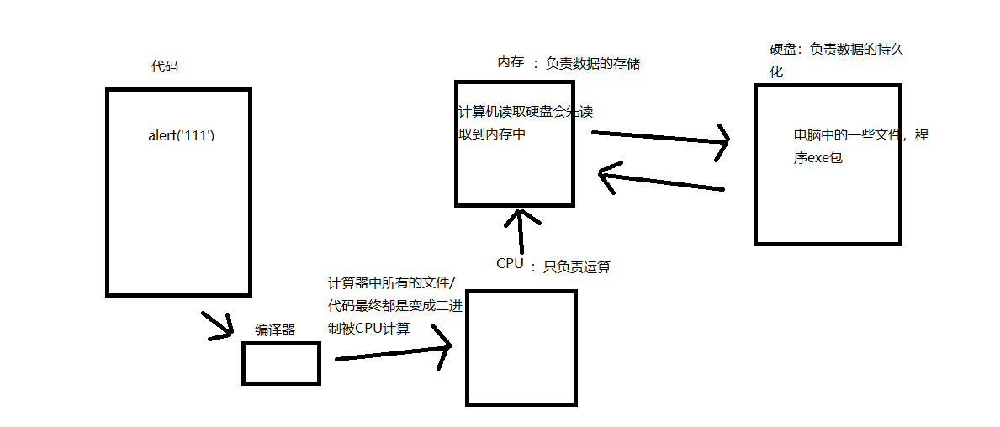

计算机基本工作原理
1.1-计算机组成
1.软件
- 应用软件：浏览器(chrome/ie/firefox)、QQ、Sublime、Word、webstorm
- 系统软件：windows，Linux，unix，OSX，iOS，android
2.硬件
- 三大件：CPU,内存,硬盘
- 输入设备：鼠标,键盘,摄像头等
- 输出设备：显示器,打印机,投影仪等


1.2-代码运行的原理
1.我们编写的代码被编译器编译成二进制被CPU运算
2.如果代码中涉及到数据的存储，则CPU会将数据存储到内存中
3.如果代码中涉及到本地文件的读写，则内存会将硬盘中的文件数据先读取到内存中再交给CPU运算
思考题：
1.内存与硬盘的区别
- 内存中保存的数据是暂时的，只有当软件在运行的时候才会在内存中存储数据，一旦软件关闭，所占用内存都会被释放
- 例如电脑中的任务管理器，只有正在运行的软件才会占用内存
- 硬盘中保存的数据是永久的，例如电脑上的一些文件，就算关机文件也不会消失
- 内存中保存的数据是暂时的，只有当软件在运行的时候才会在内存中存储数据，一旦软件关闭，所占用内存都会被释放
2.为什么CPU不直接从硬盘读写文件而是先将文件读取到内存然后在从内存中读取？
- 这主要是因为CPU操作内存的效率极高，而操作硬盘的效率很低，这样做的目的是为了提高计算机的运行速度

<!DOCTYPE html>
<html lang="en">
<head>
<meta charset="UTF-8">
<title>Title</title>
</head>
<body>
<!--
计算机由硬件和软件共同组成
硬件：cpu、内存、硬盘、主板、显卡、声卡等等
看得见摸得着的
cpu：相当于计算机中的大脑，也就是说计算机中的所有的运算都要交给CPU去执行
内存：存储数据的，存储速度快，不会永久保存数据，断电后数据就消失
硬盘：存储数据的，存储速度相对慢，会永久保存数据，断电后数据还在
CPU是无法直接访问外存储器的，硬盘就是外存储器
CPU可以访问内存，但是无法直接访问硬盘
程序是存在硬盘的(exe)，但是程序运行时产生的一些数据保存在内存中
软件：不开机一定看不到的东西，不存在于现实世界
系统软件：windows,unix,linux,mac os,android,ios
应用软件：QQ，微信，陌陌，快播
-->
</body>
</html>